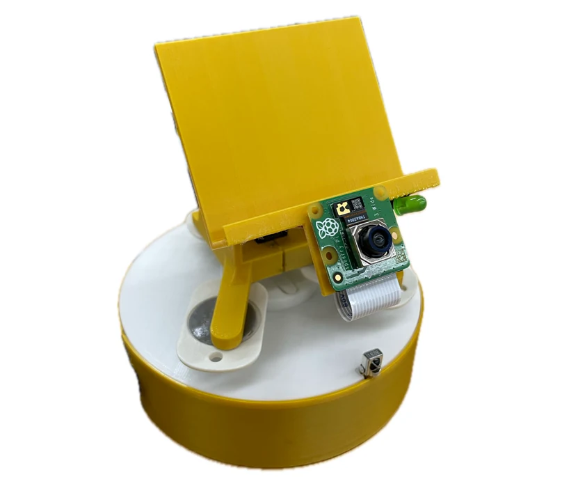
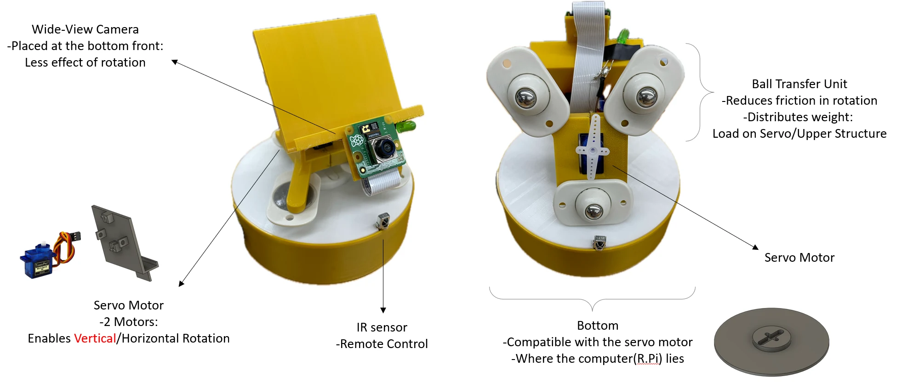

Mechatronics
Face-Tracking Pan–Tilt Camera
HD Hyundai Mechatronics Competition · 2024 · Grand Prize
A Raspberry Pi pan–tilt camera that follows a face with proportional visual feedback and infrared manual control.
Overview
Keep a solo creator in frame during hands-free filming. Provide manual control through an infrared remote.

Methodology
Hardware
A Raspberry Pi connects the camera, servos, and infrared receiver.
- Pan–tilt axes: Two servos rotate the camera horizontally and vertically.
- Mechanical support: A ball-transfer unit distributes load and reduces friction.


Face tracking and visual control
Picamera2 supplies frames. OpenCV’s Haar-cascade detector finds faces; the largest detection becomes the target.
- Image error: Normalize the face center’s offset from the image center.
- Feedback: Convert image error into incremental pan and tilt commands.
- Implemented controller: The final code sets derivative gains to zero. Visual feedback is proportional.
- Actuation: Clamp the commanded angles. Map them to calibrated pigpio pulse widths.
e_x = (W/2 − c_x) / W; e_y = (H/2 − c_y) / H
Sources: Vision-to-servo control loop
Remote control and device state
A separate thread reads LIRC commands while tracking runs.
- Modes: Switch between automatic tracking and manual operation.
- Manual commands: Move either axis, stop motion, or exit.
- Feedback and cleanup: An LED indicates face detection. Shutdown stops the camera and disables servo pulses.
Sources: Remote input and cleanup
Results & status
- HD Hyundai Mechatronics
- Grand Prize
- Pan–tilt motion
- 2-axis
- Team prize
- ₩3M
The demos show device operation and recorded footage. Quantitative tracking-error measurements were not supplied.


My contribution
Team member on the automated filming prototype.